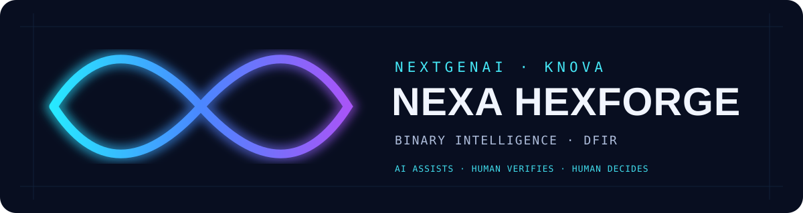

SEMANTIC HEX INSPECTOR
Bytes con significado · análisis local · verificación humana
1 · Seleccionar evidencia
Lectura local sin ejecución ni envío de archivos. Vista limitada a los primeros 4096 bytes; el encabezado PE se comprueba dentro del primer MiB.
Seleccioná un archivo para comenzar.
2 · Vista hexadecimal anotada
■ MZ■ PE■ e_lfanew■ Machine■ ZIP
Seleccioná cualquier byte para ver su conversión, el cálculo de su campo, el significado técnico y la evidencia necesaria para verificarlo. Los colores originales se conservan al seleccionar.
3 · Interpretación del analista
Sin selección.